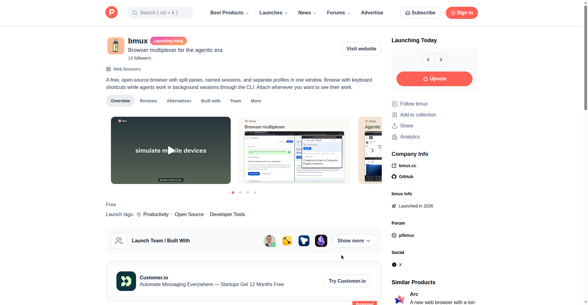

hindsight
Agent memory that learns — memory infrastructure with integrations for 25+ agent frameworks (LangGraph, Claude Agent SDK, CrewAI, OpenAI Agents). #1 on GitHub weekly trending (+16K stars this week, 44.8K total). Apache-2.0, Docker-first (surrealdb + qdrant + redis).
The innovative part: Recall runs four retrieval strategies in parallel (semantic, keyword BM25, graph, temporal), merges them with reciprocal rank fusion, and reranks with a cross-encoder. Separately, a background consolidation turns retained facts into 'observations' — deduplicated, evidence-backed beliefs that are refined rather than overwritten when new evidence arrives — and then into 'mental models' (standing synthesized answers) and knowledge pages. Memories live in isolated 'banks' with tag scoping, and 'Memory Defense' scans retains for secrets/PII. The twist isn't memory itself — it's refine-don't-overwrite consolidation plus 4-strategy fused recall.
Hackathon angle: Memory is the obvious moat layer — build a scoped-down version (e.g. memory for one vertical like coding agents) or a novel retrieval strategy on top.
Original post →
Muse Gadgets
Nat Friedman's side-project launch (Oct 2, 2026): open-source ESP32 firmware and Linux SDK so coding agents can design and build physical gadgets for Muse. 738K views, rauchg: 'this is gonna be huge.'
The innovative part: Open-source ESP32 firmware + Linux SDK that inverts the usual flow: instead of agents doing software only, you 'point your favorite coding agent at the github repo' and it builds you physical hardware peripherals for Muse. Also launching Muse Home Link, a USB-C powered open-source device that bridges Muse to smart-home devices (TVs, speakers over HTTPS) — 5,000 units free to Muse subscribers. Agents going from code to atoms is the novelty.
Hackathon angle: Agent-generated hardware gadget — natural-language spec in, firmware + enclosure out; hardware track winner material.
Original post →
bmux
Browser multiplexer for the agentic era (launched Oct 1, 2026 on Product Hunt). Free, open-source browser: split panes, named sessions, separate profiles; agents browse in background sessions via CLI, you attach to inspect.
The innovative part: tmux for the browser — split panes, named sessions, separate profiles in one window — with the agentic-era twist: agents use a CLI to navigate, inspect pages, click, type, and take screenshots in background sessions without stealing focus, and the human 'attaches' to the agent's session (like tmux attach) to watch their work. Saveable layouts, detachable windows whose pages keep running. Free, open source, early preview.
Hackathon angle: Browser-as-agent-runtime is an emerging category — extend it: agent session recording/replay for debugging, or multi-agent shared browsing.
Original post →

paperclip
The open-source app to manage agents at work — open-source MCP tool gateway + orchestration platform for agent teams. 96.4K stars, shipping daily (release v2026.1001.0 yesterday).
The innovative part: 'If OpenClaw is an employee, Paperclip is a company' — agents are 'hired' via heartbeats ('If it can receive a heartbeat, it's hired', DB-backed wakeup queue), then managed like employees: org charts with roles/titles/reporting lines, task assignment with atomic checkout and execution locks, approval gates, spend budgets, and portable company templates (export/import entire orgs). BYOA (bring your own agent, any runtime) with skill injection for training. Novelty is the heartbeats-as-employment-contract + org-chart governance metaphor.
Hackathon angle: Steal the org-chart metaphor for a narrower domain — e.g. 'hire' agents as a QA team or a research team with roles and approval gates.
Original post →
e2e
The agentic testing framework for any app (YC P26 TesterArmy, launched Oct 1, 2026, 1.1M views). rauchg: 'The future is verification-engineering. Some tests will be written by hand, most will be generated by AI and executed on real browsers.'
The innovative part: One framework that mixes deterministic and agentic APIs in the same test — use locators and deterministic assertions where stable, drop in agent steps like agent.act()/agent.assert() for flows you'd otherwise hand-describe; works across web and mobile with the same API. BYO agent/infra: any model via Vercel AI Gateway, or sign in with ChatGPT/GitHub Copilot/SuperGrok subscription. Fully open source, npx e2e init, runs locally or in CI. Novelty is the hybrid deterministic+agentic testing contract rather than pure-agent E2E.
Hackathon angle: Testing that writes itself — agent watches your app, generates tests from a prompt, self-heals flaky selectors.
Original post →